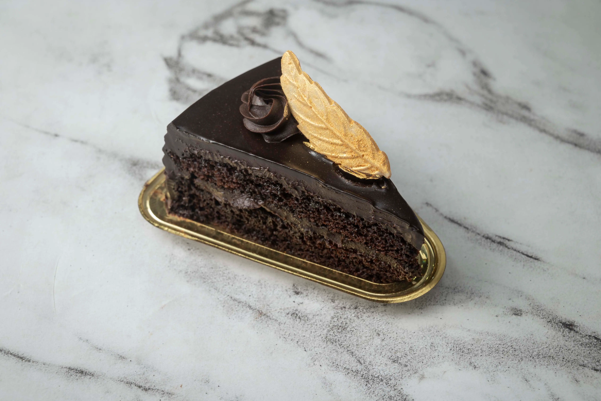
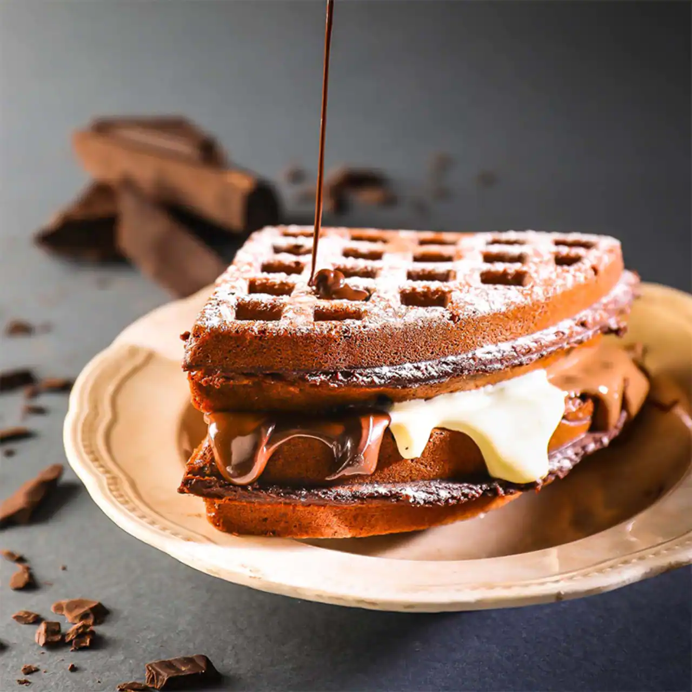
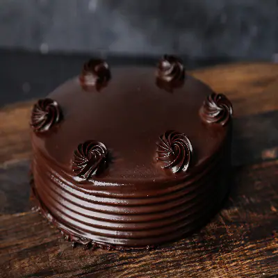
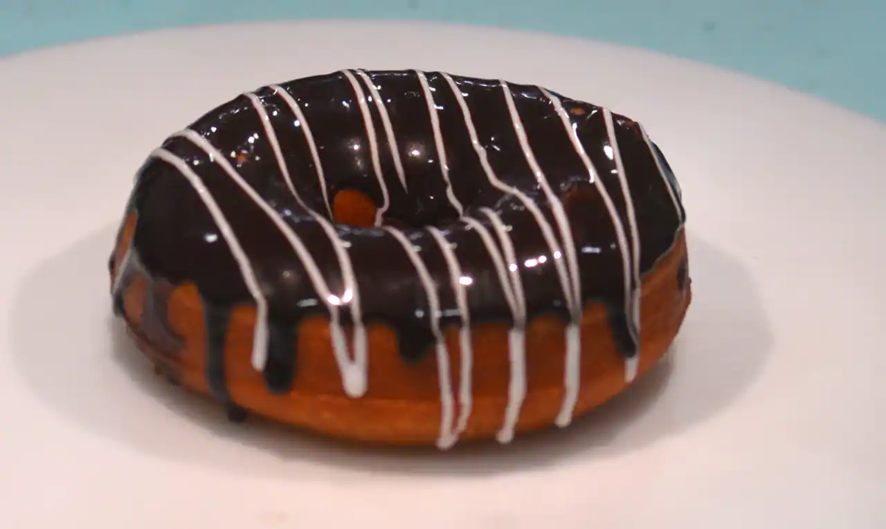
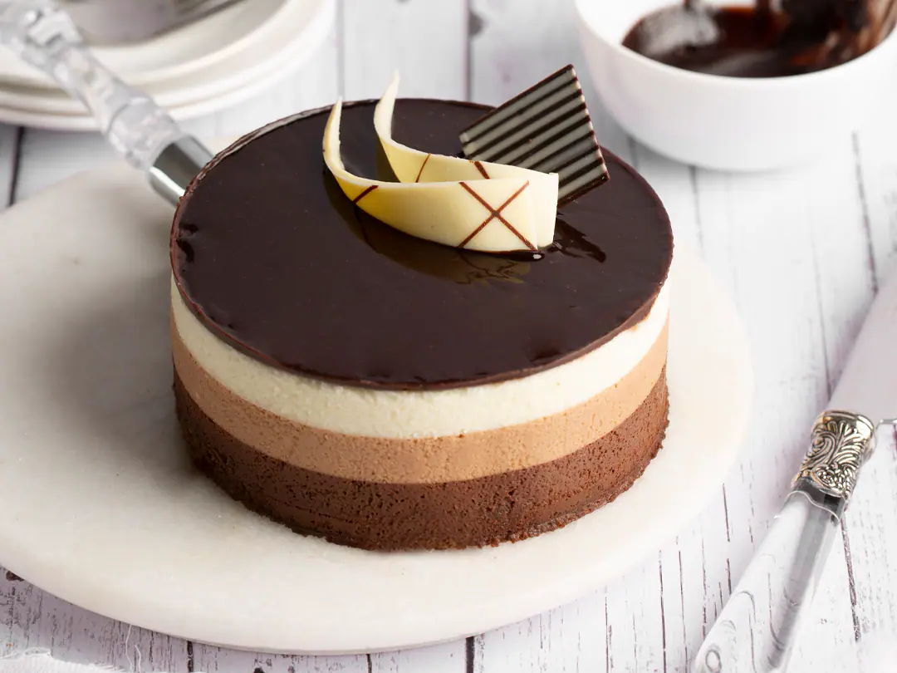

Bliss
4.1
Bakery, Dessert ...
15 min

The Belgian Waffle Co.
4.1
Waffle, Pancake, ice-cre...
21 min

Dutch Apple Pie
3.2
Desserts, Beverages ...
30 min

Tarts
3.8
Healthy Desserts, chine ...
25 min
 Alfajores
4.0
Alfajores
4.0
A Typical Italian Dessert, healt ...
26 min
Basler Brunsli
3.6
A japanese Dessert ...
31 min
Jalebi
4.4
Dessert's, Waffle...
29 min

Nutella Cake
3.8
American Dessert's, Beverage ...
33 min